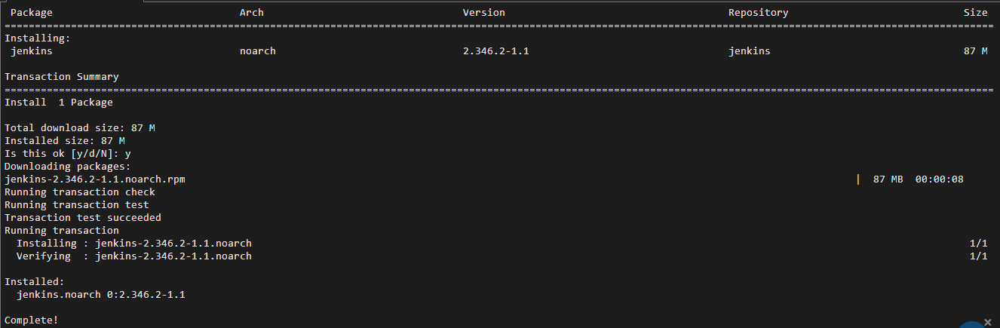
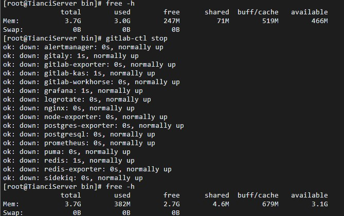
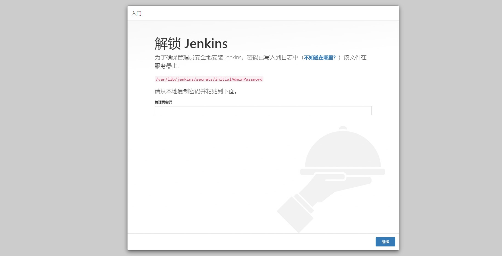
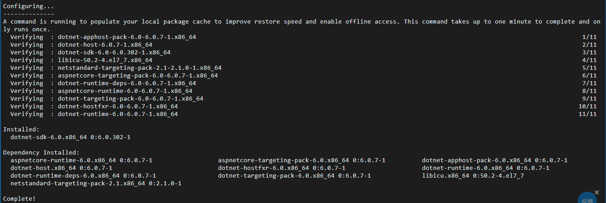
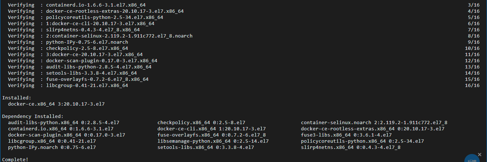
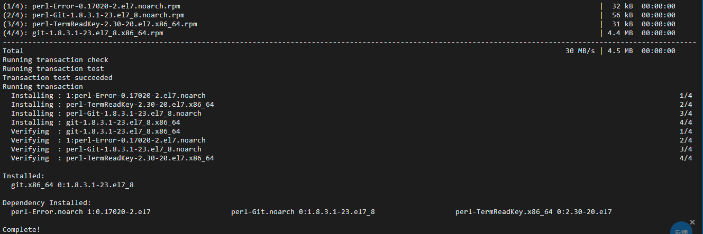

<!DOCTYPE html>
<html lang="zh-CN">
<head><meta name="generator" content="Hexo 3.9.0">
  <meta charset="utf-8">
  <meta content="width=device-width, initial-scale=1.0, maximum-scale=1.0, user-scalable=0" name="viewport">
  
  <title itemprop="name">Linux使用Jenkins+Docker自动化部署DotNET6 | TianciBlog</title>
  
    <link rel="shortcut icon" href="https://cdn.lovetianci.cn/themes/images/favicon.ico">
  
  <meta http-equiv="x-dns-prefetch-control" content="on">
  <!-- 手动添加 -->
  
  
  
  <meta name="keywords" content="Tianciの小窝,Tianci个人博客,TianciBlog">
  
  <meta name="description" content="阿里云CentOS持续集成部署DotNET6">
<meta name="keywords" content="技术">
<meta property="og:type" content="article">
<meta property="og:title" content="Linux使用Jenkins+Docker自动化部署DotNET6">
<meta property="og:url" content="/Other/DotNET6_Linux_Jenkins_Docker/index.html">
<meta property="og:site_name" content="TianciBlog">
<meta property="og:description" content="阿里云CentOS持续集成部署DotNET6">
<meta property="og:locale" content="zh-cn">
<meta property="og:image" content="https://cdn.lovetianci.cn/themes/images/background/14.jpg">
<meta property="og:updated_time" content="2022-07-30T14:51:51.564Z">
<meta name="twitter:card" content="summary">
<meta name="twitter:title" content="Linux使用Jenkins+Docker自动化部署DotNET6">
<meta name="twitter:description" content="阿里云CentOS持续集成部署DotNET6">
<meta name="twitter:image" content="https://cdn.lovetianci.cn/themes/images/background/14.jpg">
  
  <!-- end -->
  <link rel="stylesheet" href="https://fonts.googleapis.com/css?family=Noto+SerifMerriweather|Merriweather+Sans|Source+Code+Pro|Ubuntu:400,700|Noto+Serif+SC" media="all">
  <link rel="stylesheet" id="saukra_css-css" href="/css/style.css" type="text/css" media="all">
  <link rel="stylesheet" href="/css/lib.min.css" media="all">
  <link rel="stylesheet" href="/css/font.css" media="all">
  <link rel="stylesheet" href="/css/insight.css" media="all">
  <link rel="stylesheet" href="https://cdn.lovetianci.cn/themes/css/jquery.fancybox.min.css" media="all">
  <link rel="stylesheet" href="https://cdn.lovetianci.cn/themes/css/zoom.css" media="all">
  <link rel="stylesheet" type="text/css" href="/css/sharejs.css">
  
  <script>
  /*Initial Variables*/
  var mashiro_option = new Object();
  var mashiro_global = new Object();
  mashiro_option.NProgressON = true;
  /* 
   * 邮箱信息之类的东西可以填在这里，这些js变量基本都作用于sakura-app.js
   * 这样的设置仅是为了方便在基于PHP开发的主题中设置js变量，既然移植到了Node上，我想或许可以精简这一逻辑吧
   */
  mashiro_option.email_domain = "";
  mashiro_option.email_name = "";
  mashiro_option.cookie_version_control = "";
  mashiro_option.qzone_autocomplete = false;
  mashiro_option.site_name = "Tianciの小窝";
  mashiro_option.author_name = "の小窝";
  mashiro_option.site_url = "https://lovetianci.cn/";
  mashiro_option.v_appId = "gcyRrrTODColvahbgrSvApl5-MdYXbMMI";
  mashiro_option.v_appKey = "5W43w4sQ6cVbCqfCTRN0h6Ta";
  mashiro_option.mathjax = "0";
  mashiro_option.qq_api_url = "https://api.mashiro.top/qqinfo/"; 
  mashiro_option.qq_avatar_api_url = "https://api.mashiro.top/qqinfo/";

  // mashiro_option.jsdelivr_css_src = "https://gcore.jsdelivr.net/gh/moezx/cdn@3.4.5/css/lib.min.css";
  // mashiro_option.float_player_on = true;

  /*End of Initial Variables*/
  </script>
  <script type="text/javascript">
  var bg = "https://cdn.lovetianci.cn/themes/images/background/0.jpg,https://cdn.lovetianci.cn/themes/images/background/1.jpg,https://cdn.lovetianci.cn/themes/images/background/2.jpg,https://cdn.lovetianci.cn/themes/images/background/3.jpg,https://cdn.lovetianci.cn/themes/images/background/4.jpg,https://cdn.lovetianci.cn/themes/images/background/5.jpg,https://cdn.lovetianci.cn/themes/images/background/6.jpg,https://cdn.lovetianci.cn/themes/images/background/7.jpg,https://cdn.lovetianci.cn/themes/images/background/8.jpg,https://cdn.lovetianci.cn/themes/images/background/9.jpg,https://cdn.lovetianci.cn/themes/images/background/10.jpg,https://cdn.lovetianci.cn/themes/images/background/11.jpg,https://cdn.lovetianci.cn/themes/images/background/12.jpg,https://cdn.lovetianci.cn/themes/images/background/13.jpg,https://cdn.lovetianci.cn/themes/images/background/14.jpg,https://cdn.lovetianci.cn/themes/images/background/15.jpg,https://cdn.lovetianci.cn/themes/images/background/16.jpg,https://cdn.lovetianci.cn/themes/images/background/17.jpg,https://cdn.lovetianci.cn/themes/images/background/18.jpg,https://cdn.lovetianci.cn/themes/images/background/19.jpg,https://cdn.lovetianci.cn/themes/images/background/20.jpg,https://cdn.lovetianci.cn/themes/images/background/21.jpg,https://cdn.lovetianci.cn/themes/images/background/22.jpg,https://cdn.lovetianci.cn/themes/images/background/23.jpg,https://cdn.lovetianci.cn/themes/images/background/24.jpg,https://cdn.lovetianci.cn/themes/images/background/25.jpg,https://cdn.lovetianci.cn/themes/images/background/26.jpg,https://cdn.lovetianci.cn/themes/images/background/27.jpg,https://cdn.lovetianci.cn/themes/images/background/28.jpg,https://cdn.lovetianci.cn/themes/images/background/29.jpg,https://cdn.lovetianci.cn/themes/images/background/30.jpg,https://cdn.lovetianci.cn/themes/images/background/31.jpg,https://cdn.lovetianci.cn/themes/images/background/32.jpg,https://cdn.lovetianci.cn/themes/images/background/33.jpg,https://cdn.lovetianci.cn/themes/images/background/34.jpg,https://cdn.lovetianci.cn/themes/images/background/35.jpg,https://cdn.lovetianci.cn/themes/images/background/36.jpg,https://cdn.lovetianci.cn/themes/images/background/37.jpg,https://cdn.lovetianci.cn/themes/images/background/38.jpg,https://cdn.lovetianci.cn/themes/images/background/39.jpg,https://cdn.lovetianci.cn/themes/images/background/40.jpg,https://cdn.lovetianci.cn/themes/images/background/41.jpg,https://cdn.lovetianci.cn/themes/images/background/X-Blades1.jpg,https://cdn.lovetianci.cn/themes/images/background/X-Blades2.jpg,https://cdn.lovetianci.cn/themes/images/background/X-Blades3.jpg,https://cdn.lovetianci.cn/themes/images/background/X-Blades4.jpg,https://cdn.lovetianci.cn/themes/images/background/X-Blades5.jpg".split(",");
  var bgindex = Math.floor(Math.random()*bg.length);
  if (!!window.ActiveXObject || "ActiveXObject" in window) { //is IE?
    alert('朋友，IE浏览器未适配哦~');
  }
  </script>
  <style type="text/css">
  .hljs-ln{border-collapse:collapse}.hljs-ln td{padding:0}.hljs-ln-n:before{content:attr(data-line-number)}
  </style>
  <style type="text/css">.site-top .lower nav{display:block !important;}.author-profile i,.post-like a,.post-share .show-share,.sub-text,.we-info a,span.sitename,.post-more i:hover,#pagination a:hover,.post-content a:hover,.float-content i:hover{color:#FE9600}.feature i,.download,.navigator i:hover,.links ul li:before,.ar-time i,span.ar-circle,.object,.comment .comment-reply-link,.siren-checkbox-radio:checked + .siren-checkbox-radioInput:after{background:#FE9600}::-webkit-scrollbar-thumb{background:#FE9600}.download,.navigator i:hover,.link-title,.links ul li:hover,#pagination a:hover,.comment-respond input[type='submit']:hover{border-color:#FE9600}.entry-content a:hover,.site-info a:hover,.comment h4 a,#comments-navi a.prev,#comments-navi a.next,.comment h4 a:hover,.site-top ul li a:hover,.entry-title a:hover,#archives-temp h3,span.page-numbers.current,.sorry li a:hover,.site-title a:hover,i.iconfont.js-toggle-search.iconsearch:hover,.comment-respond input[type='submit']:hover{color:#FE9600}.comments .comments-main{display:block !important;}.comments .comments-hidden{display:none !important;}background-position:center center;background-attachment:inherit;}
  </style>
</head>
</html>
<body class="page-template page-template-user page-template-page-analytics page-template-userpage-analytics-php page page-id-1297 chinese-font serif isWebKit">
  <div class="scrollbar" id="bar">
  </div>
  <a href="#" class="cd-top faa-float animated"></a>
  <section id="main-container">
    <!-- 鼠标点击爆炸特效 -->
    <canvas class="fireworks" style="position: fixed;left: 0;top: 0;z-index: 1; pointer-events: none;" ></canvas> 
    <div class="headertop filter-dot">
  <div id="banner_wave_1"></div>
  <div id="banner_wave_2"></div>
  <figure id="centerbg" class="centerbg">
    <div class="focusinfo no-select">
      <div class="header-tou">
        <a href="https://lovetianci.cn/">
          
        </a>
      </div>
      <div class="header-info">
        <p id="hitokoto">获取中...</p>
        <script src="https://v1.hitokoto.cn/?c=d&c=e&c=f&c=h&c=j&encode=js&select=%23hitokoto" defer></script>
        <!-- 主题文件获取改为每日一言 -->
        <!-- <p>一身清贫怎敢入繁华，两袖清风岂能误佳人</p> -->
        <div class="top-social_v2">
          <li id="bg-pre">
            
          </li>
          
            
              
                <li>
                  <a href="https://wpa.qq.com/msgrd?v=3&amp;uin=2016838087&amp;site=11&amp;menu=yes" target="_blank" class="social-github" title="qq">
                    
                  </a>
                </li>
              
            
              
                <li class="wechat">
                  <a href="/#">
                    
                  </a>
                  <div class="wechatInner">
                    
                  </div>
                </li>
              
            
          
          <li id="bg-next">
            
          </li>
        </div>
      </div>
    </div>
  </figure>
  <div id="video-container" style="">
    <video style="object-fit: fill" id="bgvideo" class="video" video-name="" src="" width="auto" preload="auto">
    </video>
    <div id="video-btn" class="loadvideo videolive">
    </div>
    <div id="video-add">
    </div>
    <div class="video-stu">
    </div>
  </div>
  <div class="headertop-down faa-float animated" onclick="headertop_down()">
    <span>
      <i class="fa fa-chevron-down" aria-hidden="true">
      </i>
    </span>
  </div>
</div>
    <div id="page" class="site wrapper">
      <header class="site-header no-select gizle sabit" role="banner">
  <div class="site-top">
    <div class="site-branding">
      <span class="site-title">
        <span class="logolink moe-mashiro">
          <a href="/">
            <span class="sakurasono">Tianci</span>
            <span class="shironeko">の小窝</span>
          </a>
        </span>
      </span>
    </div>
    <div class="searchbox search-form-submit">
      <i class="iconfont js-toggle-search iconsearch icon-search">
      </i>
    </div>
    <div id="show-nav" class="showNav mobile-fit">
      <div class="line line1">
      </div>
      <div class="line line2">
      </div>
      <div class="line line3">
      </div>
    </div>
    <div class="lower-cantiner">
      <div class="lower">
        <nav class="mobile-fit-control hide">
          <ul id="menu-new" class="menu">
            
              <li>
                <a href="/">
                  <span class="faa-parent animated-hover">
                    <i class="fa  fa-fort-awesome faa-shake" aria-hidden="true"></i>
                    首页
                  </span>
                </a>
                
              </li>
            
              <li>
                <a href="/archives">
                  <span class="faa-parent animated-hover">
                    <i class="fa  fa-archive faa-shake" aria-hidden="true"></i>
                    归档
                  </span>
                </a>
                
                  <ul class="sub-menu">
                    
                      <li>
                        <a href="/categories/DotNET/">
                          <i class="fa fa-code" aria-hidden="true"></i>
                          .NET
                        </a>
                      </li>
                    
                      <li>
                        <a href="/categories/SQL/">
                          <i class="fa fa-file-code-o" aria-hidden="true"></i>
                          SQL
                        </a>
                      </li>
                    
                      <li>
                        <a href="/categories/Vue/">
                          <i class="fa fa-file-text-o" aria-hidden="true"></i>
                          Vue
                        </a>
                      </li>
                    
                      <li>
                        <a href="/categories/Hexo/">
                          <i class="fa fa-houzz" aria-hidden="true"></i>
                          Hexo
                        </a>
                      </li>
                    
                      <li>
                        <a href="/categories/Other/">
                          <i class="fa fa-book" aria-hidden="true"></i>
                          随笔
                        </a>
                      </li>
                    
                  </ul>
                
              </li>
            
              <li>
                <a href="javascript:;">
                  <span class="faa-parent animated-hover">
                    <i class="fa  fa-tags faa-shake" aria-hidden="true"></i>
                    标签
                  </span>
                </a>
                
                  <ul class="sub-menu">
                    
                      <li>
                        <a href="/tags/娱乐/">
                          <i class="fa fa-gamepad" aria-hidden="true"></i>
                          娱乐
                        </a>
                      </li>
                    
                      <li>
                        <a href="/tags/技术/">
                          <i class="fa fa-pencil-square-o" aria-hidden="true"></i>
                          技术
                        </a>
                      </li>
                    
                      <li>
                        <a href="/tags/面试题/">
                          <i class="fa fa-television" aria-hidden="true"></i>
                          面试
                        </a>
                      </li>
                    
                      <li>
                        <a href="/photo">
                          <i class="fa fa-photo" aria-hidden="true"></i>
                          相册
                        </a>
                      </li>
                    
                  </ul>
                
              </li>
            
              <li>
                <a href="/comment/">
                  <span class="faa-parent animated-hover">
                    <i class="fa  fa-comments faa-shake" aria-hidden="true"></i>
                    留言板
                  </span>
                </a>
                
              </li>
            
              <li>
                <a href="/mood/">
                  <span class="faa-parent animated-hover">
                    <i class="fa  fa-commenting-o faa-shake" aria-hidden="true"></i>
                    心情
                  </span>
                </a>
                
              </li>
            
              <li>
                <a href="/links/">
                  <span class="faa-parent animated-hover">
                    <i class="fa  fa-link faa-shake" aria-hidden="true"></i>
                    友链
                  </span>
                </a>
                
              </li>
            
              <li>
                <a href="/about/">
                  <span class="faa-parent animated-hover">
                    <i class="fa  fa-meetup faa-shake" aria-hidden="true"></i>
                    关于
                  </span>
                </a>
                
              </li>
            
              <li>
                <a href="/atom.xml">
                  <span class="faa-parent animated-hover">
                    <i class="fa  fa-rss faa-pulse faa-shake" aria-hidden="true"></i>
                    RSS
                  </span>
                </a>
                
              </li>
            
          </ul>
        </nav>
      </div>
    </div>
  </div>
</header>

      <link rel="stylesheet" type="text/css" href="/css/sharejs.css">
<link rel="stylesheet" href="https://cdn.lovetianci.cn/themes/cdn/css/tocbot.css">
<div class="pattern-center-blank"></div>

  <div class="pattern-center single-center">
    <!-- 有配图默认渲染第一张 -->
    <div class="pattern-attachment-img lazyload" style="background-image: url(https://cdn.lovetianci.cn/themes/images/background/14.jpg);"
      src="https://cdn.lovetianci.cn/themes/cdn/svg/orange.progress-bar-stripe-loader.svg" data-src="https://cdn.lovetianci.cn/themes/images/background/14.jpg">
    </div>
    <header class="pattern-header single-header">
      <h1 class="entry-title">
        Linux使用Jenkins+Docker自动化部署DotNET6
      </h1>
      <p class="entry-census">
        <span>
          <!-- 链接 -->
          <!-- <a href=""> -->
          <a href="https://lovetianci.cn/">
            <!-- 头像 -->
            <!--  -->
            
          </a>
        </span>

        <span>
          <!-- 发帖人 -->
          <!-- <a href=""></a> -->
          <a href="https://lovetianci.cn/">
            Tianci
          </a>
        </span>
        <span class="bull">
          ·</span>
        2022-7-30
          <span class="bull">
            ·</span>
          <span id="busuanzi_value_page_pv"></span>次阅读
          <span class="bull">
            ·</span>
          本章字数:1k
            <span class="bull">
              ·</span>
            总字数:18k
              <!-- <span>
          
        </span> -->
      </p>
    </header>
  </div>
  
    <div id="content" class="site-content">
      <div id="primary" class="content-area">
        <main id="main" class="site-main" role="main">
          <article id="post-1"
            class="post-1 post type-post status-publish format-standard has-post-thumbnail hentry category-uncategorized">
            <div class="toc"></div>
            <!--<div class="toc-entry-content"><!-- 套嵌目录使用（主要为了支援评论）-->
            
                <div class="entry-content">
                  <h3 id="CI-CD首次在Linux上使用"><a href="#CI-CD首次在Linux上使用" class="headerlink" title="CI/CD首次在Linux上使用"></a>CI/CD首次在Linux上使用</h3><a id="more"></a>
<h2 id="安装Jenkins"><a href="#安装Jenkins" class="headerlink" title="安装Jenkins"></a><a href="https://www.jenkins.io/doc/book/installing/linux/" title="官方文档" target="_blank" rel="noopener">安装Jenkins</a></h2><pre><code class="shell">sudo wget -O /etc/yum.repos.d/jenkins.repo \
    https://pkg.jenkins.io/redhat-stable/jenkins.repo
sudo rpm --import https://pkg.jenkins.io/redhat-stable/jenkins.io.key
sudo yum upgrade
# Add required dependencies for the jenkins package
sudo yum install java-11-openjdk
sudo yum install jenkins
# 如果出现no packages
# 再输入第一句代码
</code></pre>
<a href="Java_11_OpenJDK_Install.png" data-fancybox="images" data-caption="安装Java环境"></a>
<a href="Jenkins_Install.png" data-fancybox="images" data-caption="安装Jenkins"></a>
<h3 id="启动Jenkins"><a href="#启动Jenkins" class="headerlink" title="启动Jenkins"></a>启动Jenkins</h3><pre><code class="shell">service jenkins start
</code></pre>
<h3 id="查看状态"><a href="#查看状态" class="headerlink" title="查看状态"></a>查看状态</h3><pre><code class="shell">service jenkins status
</code></pre>
<h3 id="运行正常"><a href="#运行正常" class="headerlink" title="运行正常"></a>运行正常</h3><a href="Jenkins_Run_Success.png" data-fancybox="images" data-caption="Jenkins运行成功"></a>
<h3 id="如果遇到这种情况"><a href="#如果遇到这种情况" class="headerlink" title="如果遇到这种情况"></a>如果遇到这种情况</h3><a href="Jenkins_Status.jpg" data-fancybox="images" data-caption="查看状态"></a>
<h3 id="这个报错信息百度很久也没解决"><a href="#这个报错信息百度很久也没解决" class="headerlink" title="这个报错信息百度很久也没解决"></a>这个报错信息百度很久也没解决</h3><h3 id="后面查看内存使用率才发现原来GitLab吃的内存太多"><a href="#后面查看内存使用率才发现原来GitLab吃的内存太多" class="headerlink" title="后面查看内存使用率才发现原来GitLab吃的内存太多"></a>后面查看内存使用率才发现原来GitLab吃的内存太多</h3><h3 id="查看内存使用率"><a href="#查看内存使用率" class="headerlink" title="查看内存使用率"></a>查看内存使用率</h3><pre><code class="shell">free -h
</code></pre>
<a href="Free_Mem.jpg" data-fancybox="images" data-caption="查看状态"></a>
<h3 id="开启GitLab只剩下247M内存，关闭之后剩2-7G"><a href="#开启GitLab只剩下247M内存，关闭之后剩2-7G" class="headerlink" title="开启GitLab只剩下247M内存，关闭之后剩2.7G"></a>开启GitLab只剩下247M内存，关闭之后剩2.7G</h3><h3 id="然后重启Jenkins就可以正常打开了"><a href="#然后重启Jenkins就可以正常打开了" class="headerlink" title="然后重启Jenkins就可以正常打开了"></a>然后重启Jenkins就可以正常打开了</h3><h3 id="输入以下命令即可将密码打印在控制台"><a href="#输入以下命令即可将密码打印在控制台" class="headerlink" title="输入以下命令即可将密码打印在控制台"></a>输入以下命令即可将密码打印在控制台</h3><pre><code class="shell">sudo cat /var/lib/jenkins/secrets/initialAdminPassword
</code></pre>
<a href="Run.jpg" data-fancybox="images" data-caption="启动Jenkins"></a>
<h2 id="安装DotNET6-SDK"><a href="#安装DotNET6-SDK" class="headerlink" title="安装DotNET6 SDK"></a><a href="https://docs.microsoft.com/zh-cn/dotnet/core/install/linux-centos" title="官方文档" target="_blank" rel="noopener">安装DotNET6 SDK</a></h2><h3 id="安装-NET-之前，请运行以下命令，将-Microsoft-包签名密钥添加到受信任密钥列表，并添加-Microsoft-包存储库。-打开终端并运行以下命令："><a href="#安装-NET-之前，请运行以下命令，将-Microsoft-包签名密钥添加到受信任密钥列表，并添加-Microsoft-包存储库。-打开终端并运行以下命令：" class="headerlink" title="安装 .NET 之前，请运行以下命令，将 Microsoft 包签名密钥添加到受信任密钥列表，并添加 Microsoft 包存储库。 打开终端并运行以下命令："></a>安装 .NET 之前，请运行以下命令，将 Microsoft 包签名密钥添加到受信任密钥列表，并添加 Microsoft 包存储库。 打开终端并运行以下命令：</h3><pre><code class="shell">sudo rpm -Uvh https://packages.microsoft.com/config/centos/7/packages-microsoft-prod.rpm
</code></pre>
<h3 id="NET-SDK-使你可以通过-NET-开发应用。-如果安装-NET-SDK，则无需安装相应的运行时。-若要安装-NET-SDK，请运行以下命令："><a href="#NET-SDK-使你可以通过-NET-开发应用。-如果安装-NET-SDK，则无需安装相应的运行时。-若要安装-NET-SDK，请运行以下命令：" class="headerlink" title=".NET SDK 使你可以通过 .NET 开发应用。 如果安装 .NET SDK，则无需安装相应的运行时。 若要安装 .NET SDK，请运行以下命令："></a>.NET SDK 使你可以通过 .NET 开发应用。 如果安装 .NET SDK，则无需安装相应的运行时。 若要安装 .NET SDK，请运行以下命令：</h3><pre><code class="shell">sudo yum install dotnet-sdk-6.0
</code></pre>
<a href="DotNET6SDK_Install.png" data-fancybox="images" data-caption="安装DotNET6"></a>
<h3 id="安装docker（设置阿里yum源）"><a href="#安装docker（设置阿里yum源）" class="headerlink" title="安装docker（设置阿里yum源）"></a>安装docker（设置阿里yum源）</h3><pre><code class="shell">sudo yum install -y yum-utils device-mapper-persistent-data lvm2
yum-config-manager --add-repo http://mirrors.aliyun.com/docker-ce/linux/centos/docker-ce.repo
</code></pre>
<h3 id="可以查看所有仓库中所有docker版本，并选择特定版本安装"><a href="#可以查看所有仓库中所有docker版本，并选择特定版本安装" class="headerlink" title="可以查看所有仓库中所有docker版本，并选择特定版本安装"></a>可以查看所有仓库中所有docker版本，并选择特定版本安装</h3><pre><code class="shell">yum list docker-ce --showduplicates | sort -r
</code></pre>
<h3 id="由于repo中默认只开启stable仓库，故这里安装的是最新稳定版"><a href="#由于repo中默认只开启stable仓库，故这里安装的是最新稳定版" class="headerlink" title="由于repo中默认只开启stable仓库，故这里安装的是最新稳定版"></a>由于repo中默认只开启stable仓库，故这里安装的是最新稳定版</h3><pre><code class="shell">sudo yum install docker-ce
</code></pre>
<a href="Docker_Install.png" data-fancybox="images" data-caption="安装docker"></a>
<h3 id="启动docker"><a href="#启动docker" class="headerlink" title="启动docker"></a>启动docker</h3><pre><code class="shell">sudo systemctl start docker
sudo systemctl status docker
</code></pre>
<a href="Docker_Run_Success.png" data-fancybox="images" data-caption="启动docker"></a>
<h3 id="安装Git"><a href="#安装Git" class="headerlink" title="安装Git"></a>安装Git</h3><pre><code class="shell">yum install -y git
</code></pre>
<a href="Git_Install.png" data-fancybox="images" data-caption="安装Git"></a>
<h3 id="Jenkins配置shell自动化部署"><a href="#Jenkins配置shell自动化部署" class="headerlink" title="Jenkins配置shell自动化部署"></a>Jenkins配置shell自动化部署</h3><h3 id="创建Jobs配置Git选择构建中的执行Shell"><a href="#创建Jobs配置Git选择构建中的执行Shell" class="headerlink" title="创建Jobs配置Git选择构建中的执行Shell"></a>创建Jobs配置Git选择构建中的执行Shell</h3><h3 id="Jenkins下的项目目录-var-lib-jenkins-jobs"><a href="#Jenkins下的项目目录-var-lib-jenkins-jobs" class="headerlink" title="Jenkins下的项目目录/var/lib/jenkins/jobs"></a>Jenkins下的项目目录/var/lib/jenkins/jobs</h3><h3 id="可以进入对应项目中的workspace进行编译，编译通过基本就没啥问题了"><a href="#可以进入对应项目中的workspace进行编译，编译通过基本就没啥问题了" class="headerlink" title="可以进入对应项目中的workspace进行编译，编译通过基本就没啥问题了"></a>可以进入对应项目中的workspace进行编译，编译通过基本就没啥问题了</h3><h3 id="Jenkins中运行的shell命令"><a href="#Jenkins中运行的shell命令" class="headerlink" title="Jenkins中运行的shell命令"></a>Jenkins中运行的shell命令</h3><pre><code class="shell">#!/bin/bash
pwd
dotnet restore
dotnet build
dotnet publish
#输出一提示的话
echo &quot;Successfully^_^ ......................................................................................&quot;
#输出当前地址，可以在日志中看到当前路径，检查一些路径问题
pwd
# 删除所有容器
docker rm -vf $(docker ps -aq)
# 删除所有镜像
docker rmi -f $(docker images -aq)
#构建镜像命令
docker build -t dotnet6api .
#运行镜像
#--name dotnet6api是容器名称
#dotnet6api是绑定的镜像名称
#5000是对外暴露的端口
#80是docker内部绑定的端口
docker run -d -p 5000:80 --restart=always --name dotnet6api dotnet6api
</code></pre>
<h3 id="首次Jenkins构建会报错，报错信息dial-unix-var-run-docker-sock-connect-permission-denied"><a href="#首次Jenkins构建会报错，报错信息dial-unix-var-run-docker-sock-connect-permission-denied" class="headerlink" title="首次Jenkins构建会报错，报错信息dial unix /var/run/docker.sock: connect: permission denied"></a>首次Jenkins构建会报错，报错信息dial unix /var/run/docker.sock: connect: permission denied</h3><pre><code class="shell"># 添加当前用户到docker用户组  ${USER}指用户名
sudo gpasswd -a ${USER} docker
# 查看用户组下用户，检查添加是否成功
cat /etc/group | grep docker
# 重启docker服务
sudo service docker restart
# 切换当前会话到新组【group】或重启会话
newgrp - docker
# 更改文件权限
sudo chmod 666 /var/run/docker.sock
</code></pre>
<h3 id="再次构建项目"><a href="#再次构建项目" class="headerlink" title="再次构建项目"></a>再次构建项目</h3><a href="DotNET6API_Run_Success.png" data-fancybox="images" data-caption="构建成功"></a>
<h3 id="输入IP加端口号项目运行正常"><a href="#输入IP加端口号项目运行正常" class="headerlink" title="输入IP加端口号项目运行正常"></a>输入IP加端口号项目运行正常</h3><h3 id="踩到一个小坑，因为日志用的是Log4net，而日志文件名叫Log4net-Config中间有大写"><a href="#踩到一个小坑，因为日志用的是Log4net，而日志文件名叫Log4net-Config中间有大写" class="headerlink" title="踩到一个小坑，因为日志用的是Log4net，而日志文件名叫Log4net.Config中间有大写"></a>踩到一个小坑，因为日志用的是Log4net，而日志文件名叫Log4net.Config中间有大写</h3><h3 id="最后编译报错找不到log4net-config，后面把文件名改为小写即可通过了"><a href="#最后编译报错找不到log4net-config，后面把文件名改为小写即可通过了" class="headerlink" title="最后编译报错找不到log4net.config，后面把文件名改为小写即可通过了"></a>最后编译报错找不到log4net.config，后面把文件名改为小写即可通过了</h3><h3 id="DockerFile是通过VS自动生成的没有任何修改，将其移动到解决方案sln同级目录即可"><a href="#DockerFile是通过VS自动生成的没有任何修改，将其移动到解决方案sln同级目录即可" class="headerlink" title="DockerFile是通过VS自动生成的没有任何修改，将其移动到解决方案sln同级目录即可"></a>DockerFile是通过VS自动生成的没有任何修改，将其移动到解决方案sln同级目录即可</h3><h2 id="docker基本命令"><a href="#docker基本命令" class="headerlink" title="docker基本命令"></a>docker基本命令</h2><h3 id="查看所有镜像"><a href="#查看所有镜像" class="headerlink" title="查看所有镜像"></a>查看所有镜像</h3><pre><code class="shell">docker image ls
</code></pre>
<h3 id="查看所有容器"><a href="#查看所有容器" class="headerlink" title="查看所有容器"></a>查看所有容器</h3><pre><code class="shell">docker ps -a
</code></pre>
<h3 id="停止指定容器"><a href="#停止指定容器" class="headerlink" title="停止指定容器"></a>停止指定容器</h3><pre><code class="shell">docker stop 容器名
</code></pre>
<h3 id="删除指定容器"><a href="#删除指定容器" class="headerlink" title="删除指定容器"></a>删除指定容器</h3><pre><code class="shell">docker rm 容器名
</code></pre>
<h3 id="删除所有容器"><a href="#删除所有容器" class="headerlink" title="删除所有容器"></a>删除所有容器</h3><pre><code class="shell">docker rm -vf $(docker ps -aq)
</code></pre>
<h3 id="删除指定镜像"><a href="#删除指定镜像" class="headerlink" title="删除指定镜像"></a>删除指定镜像</h3><pre><code class="shell">docker rmi 镜像名
</code></pre>
<h3 id="删除所有镜像"><a href="#删除所有镜像" class="headerlink" title="删除所有镜像"></a>删除所有镜像</h3><pre><code class="shell">docker rmi -f $(docker images -aq)
</code></pre>
<h3 id="停止Docker服务并查看运行状态"><a href="#停止Docker服务并查看运行状态" class="headerlink" title="停止Docker服务并查看运行状态"></a>停止Docker服务并查看运行状态</h3><pre><code class="shell">service docker stop
service docker status
</code></pre>
<h3 id="扩展知识，发布项目想查看日志怎么办"><a href="#扩展知识，发布项目想查看日志怎么办" class="headerlink" title="扩展知识，发布项目想查看日志怎么办"></a>扩展知识，发布项目想查看日志怎么办</h3><h3 id="进入容器dotnet6api"><a href="#进入容器dotnet6api" class="headerlink" title="进入容器dotnet6api"></a>进入容器dotnet6api</h3><pre><code class="shell">docker exec -it dotnet6api /bin/bash
</code></pre>
<h3 id="容器里面相当于一个系统所以无法使用vim等操作"><a href="#容器里面相当于一个系统所以无法使用vim等操作" class="headerlink" title="容器里面相当于一个系统所以无法使用vim等操作"></a>容器里面相当于一个系统所以无法使用vim等操作</h3><h3 id="安装vim"><a href="#安装vim" class="headerlink" title="安装vim"></a>安装vim</h3><pre><code class="shell">apt-get install vim
</code></pre>
<h3 id="出现错误"><a href="#出现错误" class="headerlink" title="出现错误"></a>出现错误</h3><pre><code class="shell">Reading package lists... Done
Building dependency tree... Done
Reading state information... Done
E: Unable to locate package vim
</code></pre>
<h3 id="以下命令貌似会把本地的源同步到docker容器中再安装就可以了"><a href="#以下命令貌似会把本地的源同步到docker容器中再安装就可以了" class="headerlink" title="以下命令貌似会把本地的源同步到docker容器中再安装就可以了"></a>以下命令貌似会把本地的源同步到docker容器中再安装就可以了</h3><pre><code class="shell">apt-get update
apt-get install vim
</code></pre>
<h3 id="退出容器快捷键CTRL-P-然后-CTRL-Q"><a href="#退出容器快捷键CTRL-P-然后-CTRL-Q" class="headerlink" title="退出容器快捷键CTRL + P 然后 CTRL + Q"></a>退出容器快捷键CTRL + P 然后 CTRL + Q</h3>
                </div>
                <!-- 赞赏 -->
                <div class="single-reward">
                  <div class="reward-open">赏
                    <div class="reward-main">
                      <ul class="reward-row">
                        <li class="alipay-code"></li>
                        <li class="wechat-code">
                        </li>
                      </ul>
                    </div>
                  </div>
                </div>
                <!-- 赞赏 -->
                <!-- .entry-content -->
                <!-- data-disabled="diandian, tencent" -->
                <div style="text-align:center; width: 100%" class="social-share share-mobile" data-disabled=""></div>
                <footer class="post-footer">
                  <div class="post-lincenses"><a href="https://creativecommons.org/licenses/by-nc-sa/4.0/deed.zh"
                      target="_blank" rel="nofollow"><i class="fa fa-creative-commons" aria-hidden="true"></i>
                      知识共享署名-非商业性使用-相同方式共享 4.0 国际许可协议</a></div>
                  <div class="post-tags">
                  </div>
                  <div class="post-share">
                    <div class="social-share sharehidden share-component"></div>
                    <i class="iconfont show-share icon-forward"></i>
                  </div>
                </footer>
                <!-- .entry-footer -->
          </article>
          <!-- #post-## -->
          <div class="toc" style="background: none;"></div>
          <section class="post-squares nextprev">
            
                      
                        
                              <div class="post-nepre full next">
                                
                                  <a href="/Other/Linux_Install_GitLab/" rel="next">
                                    <div class="background">
                                      
                                    </div>
                                    <span class="label">
                                      Next Post</span>
                                    <div class="info">
                                      <h3>
                                        Linux安装GitLab
                                      </h3>
                                      <hr>
                                    </div>
                                  </a>
                              </div>
                              
          </section>
          
<div id="vcomments"></div>
<script>
  window.onload = function(){
      var valine = new Valine();
      valine.init({
        el: '#vcomments',
        avatar: 'monsterid',
        appId: "gcyRrrTODColvahbgrSvApl5-MdYXbMMI",
        appKey: "5W43w4sQ6cVbCqfCTRN0h6Ta",
        path: window.location.pathname,
        placeholder: "你是我一生只会遇见一次的惊喜 ..."
      })
  }
</script>

            <section class="author-profile">
              <div class="info" itemprop="author" itemscope="" itemtype="https://schema.org/Person">
                <!-- 页面底部头像统一，post页面可以不写 -->
                <!-- <a href="" class="profile gravatar"></a> -->
                <a href="https://lovetianci.cn/" class="profile gravatar"></a>
                <div class="meta">
                  <span class="title">Author</span>
                  <h3 itemprop="name">
                    <!-- 底部发帖人 -->
                    <!-- <a href="" itemprop="url" rel="author"></a> -->
                    <a href="https://lovetianci.cn/" itemprop="url" rel="author">
                      Tianci
                    </a>
                  </h3>
                </div>
              </div>
              <hr>
              <!-- 底部文字从页面自定义方式 -->
              <!-- <p><i class="iconfont icon-write"></i></p> -->
              <p><i class="iconfont icon-write"></i>
                被这风吹散的人说Ta爱的不深，被这雨淋湿的人说Ta不会冷
              </p>
            </section>
        </main><!-- #main -->
      </div><!-- #primary -->
    </div>

    
    </div>    
    <div class="ins-search">
    <div class="ins-search-mask"></div>
    <div class="ins-search-container">
        <div class="ins-input-wrapper">
            <input type="text" class="ins-search-input" placeholder="请输入关键词..."/>
            <span class="ins-close ins-selectable"><i class="fa fa-times-circle"></i></span>
        </div>
        <div class="ins-section-wrapper">
            <div class="ins-section-container"></div>
        </div>
    </div>
</div>
<script>
(function (window) {
    var INSIGHT_CONFIG = {
        TRANSLATION: {
            POSTS: '文章',
            // PAGES: '页面',
            CATEGORIES: '分类',
            TAGS: '标签',
        },
        ROOT_URL: '/',
        CONTENT_URL: '/content.json',
    };
    window.INSIGHT_CONFIG = INSIGHT_CONFIG;
})(window);
</script>
    <footer id="colophon" class="site-footer" role="contentinfo">
  <div class="site-info">
    <div class="footertext">
      <div class="img-preload">
        <!-- cdn资源 -->
        
        
      </div>
      <p style="color: #666666;">&copy 2022</p>
    </div>
    <div class="footer-device">
      <p style="font-family: 'Ubuntu', sans-serif;">
        <span id="timeDate">载入天数...&nbsp;&nbsp;</span><span id="times">载入时分秒...&nbsp;&nbsp;</span>
        <span id="busuanzi_container_site_pv">您是第<span id="busuanzi_value_site_pv"></span>个访客&nbsp;&nbsp;</span>
        <a href="https://beian.miit.gov.cn/#/Integrated/recordQuery" target="_blank"
          style="color: #b9b9b9;;text-decoration: underline dotted rgba(0, 0, 0, .1);">湘ICP备19020367号-1</a> <i
          class="iconfont icon-sakura rotating" style="color: #ffc0cb;display:inline-block"></i> by <a
          href="https://www.lovetianci.cn" target="_blank"
          style="color: #b9b9b9;;text-decoration: underline dotted rgba(0, 0, 0, .1);">Tianci </a>&copy 版权所有</a>
      </p>
    </div>
  </div>
</footer>


<!-- <script src="/js/tocbot.js"></script> -->
<script type="text/javascript"
  src="https://cdn.lovetianci.cn/themes/js/lib.min.js"></script>
<script src="https://cdn.lovetianci.cn/themes/cdn/js/clipboard.min.js"></script>
<script type="text/javascript"
  src="https://cdn.lovetianci.cn/themes/js/InsightSearch.js"></script>
<script type="text/javascript"
  src="https://cdn.lovetianci.cn/themes/js/jquery.fancybox.min.js"></script>
<script type="text/javascript"
  src="https://cdn.lovetianci.cn/themes/js/zoom.min.js"></script>
<script type="text/javascript" src="https://cdn.lovetianci.cn/themes/js/sakura-app.js"></script>

<!-- Leancloud 操作库，为了防止和说说页面冲突，放到post.ejs保证生成不影响page页面-->
<!-- <script type="text/javascript" src="//cdn1.lncld.net/static/js/3.0.4/av-min.js"></script> -->
<!-- <script type="text/javascript" src="//unpkg.com/valine@latest/dist/Valine.min.js"></script> -->
<script type="text/javascript" src="https://cdn.lovetianci.cn/themes/js/NewValine.js"></script>
<!-- <script type="text/javascript" src="https://cdnjs.cloudflare.com/ajax/libs/valine/1.4.18/Valine.min.js"></script> -->

<!-- 偷来的Leancloud操作库 -->
<!-- <script type="text/javascript" src="https://gcore.jsdelivr.net/gh/drew233/css/lvaline.min.js"></script> -->
<!-- <script src="https://gcore.jsdelivr.net/npm/leancloud-storage@5.0.0/dist/av-min.js"></script> -->

<!-- 淘汰的Leancloud 操作库 -->
<!-- <script type="text/javascript" src="https://cdn.lovetianci.cn/themes/js/av-min.js"></script> -->
<!-- <script type="text/javascript" src="https://cdn.lovetianci.cn/themes/js/Valine.js"></script> -->

<!-- 不蒜子 网页计数器 -->
<script src="//busuanzi.ibruce.info/busuanzi/2.3/busuanzi.pure.mini.js"></script>
<!-- <script src="https://cdnjs.cloudflare.com/ajax/libs/tocbot/4.4.2/tocbot.min.js"></script> -->

<!-- 网页看板娘 -->
<!-- <script src="https://gcore.jsdelivr.net/gh/2016838087/TianciShokaBlog@master/live2dw/lib/L2Dwidget.min.js?094cbace49a39548bed64abff5988b05"></script> -->
<!-- <script>L2Dwidget.init({"pluginRootPath":"https://gcore.jsdelivr.net/gh/2016838087/TianciShokaBlog@master/live2dw/","pluginJsPath":"https://gcore.jsdelivr.net/gh/2016838087/TianciShokaBlog@master/lib/","pluginModelPath":"https://gcore.jsdelivr.net/gh/2016838087/TianciShokaBlog@master/assets/","tagMode":false,"debug":false,"model":{"jsonPath":"https://gcore.jsdelivr.net/gh/2016838087/TianciShokaBlog@master/live2dw/assets/z16.model.json"},"display":{"position":"right","width":150,"height":300},"mobile":{"show":false},"log":false});</script> -->

<!-- <script src="https://gcore.jsdelivr.net/gh/2016838087/live2d-widget@master/autoload.js"></script> -->
<!-- 关闭看板娘 -->

<!-- 有趣的标题 -->
<!-- <script src="https://cdn.lovetianci.cn/themes/cdn/js/FunnyTitle.js"></script> -->

<!-- 樱花飘落 -->
<!-- <script src="http://139.155.75.229:81/Upload/Images/1640846639759.js"></script> -->
<!-- <script src="https://cdn.lovetianci.cn/themes/cdn/js/sakura.js"></script> -->
<!-- <script src="https://cdn.lovetianci.cn/themes/cdn/js/snow.js"></script> -->

<!-- 鼠标点击爱心 -->
<!-- <script src="https://cdn.lovetianci.cn/themes/cdn/js/Love.js"></script> -->

<!-- 鼠标点击爆炸特效 -->
<!-- <script type="text/javascript" src="/cdn/js/anime.min.js"></script> -->
<!-- <script src="https://cdn.lovetianci.cn/themes/cdn/js/clickBoom.js"></script> -->

<!-- 鼠标滑动显示星星 -->
<!-- <script src="https://cdn.lovetianci.cn/themes/cdn/js/stars.js"></script> -->

<!-- 禁用F12和右键 -->
<!-- <script src="https://cdn.lovetianci.cn/themes/cdn/js/noSomekey.js"></script> -->

<!--动态线条背景-->
<script type="text/javascript" color="220,220,220" opacity='0.7' zIndex="-2" count="200"
  src="https://cdn.lovetianci.cn/themes/cdn/js/Lines.js">
</script>

<script type="text/javascript">
  /* <![CDATA[ */
  if (/Android|webOS|iPhone|iPod|BlackBerry/i.test(navigator.userAgent)) {
    var Poi = { "pjax": "1", "movies": { "url": "https://gcore.jsdelivr.net/gh/2016838087/Artitalk-emoji@master/Video/", "name": "The Pet Girl of Sakurasou.mp4,Unbroken.mp4", "live": "close" }, "windowheight": "fixed", "codelamp": "close", "ajaxurl": "", "order": "asc", "formpostion": "bottom" };
  } else {
    var Poi = { "pjax": "1", "movies": { "url": "https://gcore.jsdelivr.net/gh/2016838087/Artitalk-emoji@master/Video/", "name": "The Pet Girl of Sakurasou.mp4,Unbroken.mp4", "live": "open" }, "windowheight": "auto", "codelamp": "close", "ajaxurl": "", "order": "asc", "formpostion": "bottom" };
  }
/* ]]> */

</script>
<script>
  $(document).ready(function () {
    if ($(".toc").length > 0 && document.body.clientWidth > 1200) {
      if ($(".pattern-center").length > 0) { //有图的情况
        tocbot.init({
          // Where to render the table of contents.
          tocSelector: '.toc', // 放置目录的容器
          // Where to grab the headings to build the table of contents.
          contentSelector: '.entry-content', // 正文内容所在
          // Which headings to grab inside of the contentSelector element.
          scrollSmooth: true,
          headingSelector: 'h1, h2, h3, h4, h5', // 需要索引的标题级别
          headingsOffset: -400,
          scrollSmoothOffset: -85
        });
      } else {
        tocbot.init({
          // Where to render the table of contents.
          tocSelector: '.toc', // 放置目录的容器
          // Where to grab the headings to build the table of contents.
          contentSelector: '.entry-content', // 正文内容所在
          // Which headings to grab inside of the contentSelector element.
          scrollSmooth: true,
          headingSelector: 'h1, h2, h3, h4, h5', // 需要索引的标题级别
          headingsOffset: -85,
          scrollSmoothOffset: -85
        });
      }
      var offsetTop = $('.toc').offset().top - 95;
      window.onscroll = function () {
        var scrollTop = window.pageYOffset || document.documentElement.scrollTop || document.body.scrollTop;
        if (scrollTop >= offsetTop) {
          $('.toc').addClass('toc-fixed');
        } else {
          $('.toc').removeClass('toc-fixed');
        }
      }
    }
  });
</script>
<!-- 网站时间统计 -->
<script>
  var now = new Date();
  function createtime() {
    var grt = new Date("01/05/2020 00:00:00");//在此处修改你的建站时间
    now.setTime(now.getTime() + 250);
    days = (now - grt) / 1000 / 60 / 60 / 24; dnum = Math.floor(days);
    hours = (now - grt) / 1000 / 60 / 60 - (24 * dnum); hnum = Math.floor(hours);
    if (String(hnum).length == 1) { hnum = "0" + hnum; } minutes = (now - grt) / 1000 / 60 - (24 * 60 * dnum) - (60 * hnum);
    mnum = Math.floor(minutes); if (String(mnum).length == 1) { mnum = "0" + mnum; }
    seconds = (now - grt) / 1000 - (24 * 60 * 60 * dnum) - (60 * 60 * hnum) - (60 * mnum);
    snum = Math.round(seconds); if (String(snum).length == 1) { snum = "0" + snum; }
    document.getElementById("timeDate").innerHTML = "本站已安全运行 " + dnum + " 天 ";
    document.getElementById("times").innerHTML = hnum + " 小时 " + mnum + " 分 " + snum + " 秒&nbsp;&nbsp;";
  }
  setInterval("createtime()", 250);
</script>
    <div class="openNav no-select" style="height: 50px;">
      <div class="iconflat no-select" style="width: 50px; height: 50px;">
        <div class="icon"></div>
      </div>
      <div class="site-branding search-form-submit">
        <i class="iconfont js-toggle-search iconsearch icon-search"></i>
      </div>
    </div>
  </section>
  <!-- 实现换肤功能 -->
  <!-- <div class="skin-menu no-select" id="mainskin" style="position: fixed">
    <div class="theme-controls row-container">
        <ul class="menu-list">
        <li id="white-bg"> <i class="fa fa-television" aria-hidden="true"></i></li>
        <li id="sakura-bg"> <i class="iconfont icon-sakura"></i></li>
        <li id="gribs-bg"> <i class="fa fa-slack" aria-hidden="true"></i></li>
        <li id="KAdots-bg"> <i class="iconfont icon-dots"></i></li>
        <li id="totem-bg"> <i class="fa fa-optin-monster" aria-hidden="true"></i></li>
        <li id="pixiv-bg"> <i class="iconfont icon-pixiv"></i></li>
        <li id="bing-bg"> <i class="iconfont icon-bing"></i></li>
        <li id="dark-bg"> <i class="fa fa-moon-o" aria-hidden="true"></i></li>
        </ul>
    </div>
</div>
<canvas id="night-mode-cover"></canvas>  -->
  <!-- <div class="changeSkin-gear no-select">
    <div class="keys" id="setbtn"> 
        <span id="open-skinMenu">切换主题  
        <i class="iconfont icon-gear inline-block rotating"></i> 
        </span>
    </div>
</div> -->
  <div id="mo-nav" class="">
  <div class="m-avatar">
    
  </div>
  <p style="text-align: center; color: #333; font-weight: 900; font-family: 'Ubuntu', sans-serif; letter-spacing: 1.5px">Tianciの小窝</p>
  <p style="text-align: center; word-spacing: 20px;">
    
      
        <a href="https://wpa.qq.com/msgrd?v=3&uin=2016838087&site=11&menu=yes" class="fa fa-qq" target="_blank" style="color: #333; margin-left:20px"></a>
      
        <a href="/#" class="fa " target="_blank" style="color: #; margin-left:20px"></a>
      
    
  </p>
  <ul id="menu-new-1" class="menu">
    
      <li>
        <a href="/">
          <span class="faa-parent animated-hover">
            <i class="fa  fa-fort-awesome faa-shake" aria-hidden="true"></i>
            首页
          </span>
        </a>
        
      </li>
    
      <li>
        <a href="/archives">
          <span class="faa-parent animated-hover">
            <i class="fa  fa-archive faa-shake" aria-hidden="true"></i>
            归档
          </span>
        </a>
        
          <ul class="sub-menu">
            
              <li>
                <a href="/categories/DotNET/">
                  <i class="fa fa-code" aria-hidden="true"></i>
                  .NET
                </a>
              </li>
            
              <li>
                <a href="/categories/SQL/">
                  <i class="fa fa-file-code-o" aria-hidden="true"></i>
                  SQL
                </a>
              </li>
            
              <li>
                <a href="/categories/Vue/">
                  <i class="fa fa-file-text-o" aria-hidden="true"></i>
                  Vue
                </a>
              </li>
            
              <li>
                <a href="/categories/Hexo/">
                  <i class="fa fa-houzz" aria-hidden="true"></i>
                  Hexo
                </a>
              </li>
            
              <li>
                <a href="/categories/Other/">
                  <i class="fa fa-book" aria-hidden="true"></i>
                  随笔
                </a>
              </li>
            
          </ul>
        
      </li>
    
      <li>
        <a href="javascript:;">
          <span class="faa-parent animated-hover">
            <i class="fa  fa-tags faa-shake" aria-hidden="true"></i>
            标签
          </span>
        </a>
        
          <ul class="sub-menu">
            
              <li>
                <a href="/tags/娱乐/">
                  <i class="fa fa-gamepad" aria-hidden="true"></i>
                  娱乐
                </a>
              </li>
            
              <li>
                <a href="/tags/技术/">
                  <i class="fa fa-pencil-square-o" aria-hidden="true"></i>
                  技术
                </a>
              </li>
            
              <li>
                <a href="/tags/面试题/">
                  <i class="fa fa-television" aria-hidden="true"></i>
                  面试
                </a>
              </li>
            
              <li>
                <a href="/photo">
                  <i class="fa fa-photo" aria-hidden="true"></i>
                  相册
                </a>
              </li>
            
          </ul>
        
      </li>
    
      <li>
        <a href="/comment/">
          <span class="faa-parent animated-hover">
            <i class="fa  fa-comments faa-shake" aria-hidden="true"></i>
            留言板
          </span>
        </a>
        
      </li>
    
      <li>
        <a href="/mood/">
          <span class="faa-parent animated-hover">
            <i class="fa  fa-commenting-o faa-shake" aria-hidden="true"></i>
            心情
          </span>
        </a>
        
      </li>
    
      <li>
        <a href="/links/">
          <span class="faa-parent animated-hover">
            <i class="fa  fa-link faa-shake" aria-hidden="true"></i>
            友链
          </span>
        </a>
        
      </li>
    
      <li>
        <a href="/about/">
          <span class="faa-parent animated-hover">
            <i class="fa  fa-meetup faa-shake" aria-hidden="true"></i>
            关于
          </span>
        </a>
        
      </li>
    
      <li>
        <a href="/atom.xml">
          <span class="faa-parent animated-hover">
            <i class="fa  fa-rss faa-pulse faa-shake" aria-hidden="true"></i>
            RSS
          </span>
        </a>
        
      </li>
    
  </ul>
  <p style="text-align: center; font-size: 13px; color: #b9b9b9;">&copy 2020 TianciBlog</p>
</div>
<button onclick="topFunction()" class="mobile-cd-top" id="moblieGoTop" title="Go to top" style="display: none;"><i class="fa fa-chevron-up" aria-hidden="true"></i></button>
  <link rel="stylesheet" href="https://cdn.lovetianci.cn/themes/cdn/css/APlayer.min.css">
<script src="https://cdn.lovetianci.cn/themes/cdn/js/APlayer.min.js"></script>
<!-- require MetingJS -->
<script src="https://cdn.lovetianci.cn/themes/cdn/js/Meting.min.js"></script>
<style>
  .aplayer .aplayer-lrc {
    height: 35px;
  }
  .aplayer .aplayer-lrc p{
    font-size: 16px;
    font-weight: 700;
    line-height: 18px !important;
  }
  .aplayer .aplayer-lrc p.aplayer-lrc-current{
    color: #FF1493;
  }
  .aplayer.aplayer-narrow .aplayer-body{
    left: -66px !important;
  }
  .aplayer.aplayer-fixed .aplayer-lrc {
    display: none;
  }
  .aplayer .aplayer-lrc.aplayer-lrc-hide {
      display:none !important;
  }
  .aplayer.aplayer-fixed .lrc-show {
    display: block;
    background: rgba(255, 255, 255, 0.8);
  }
</style>
<meting-js

    id="2742570554"

    server="tencent"

    type="playlist"

    fixed="true"

    autoplay="false"

    loop="all"

    order="list"

    preload="auto"

    volume="0.7"

    mutex="true"

    hideLrc="false"

</meting-js>
<script>
  $(function(){
    $('body').on('click', '.aplayer', function(){
      if($('.aplayer-button').hasClass('aplayer-play')) {
        $('.aplayer-lrc').removeClass('lrc-show');
      } else {
        $('.aplayer-lrc').addClass('lrc-show');
      }
    })
  });
</script>
</body>
</html>